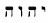
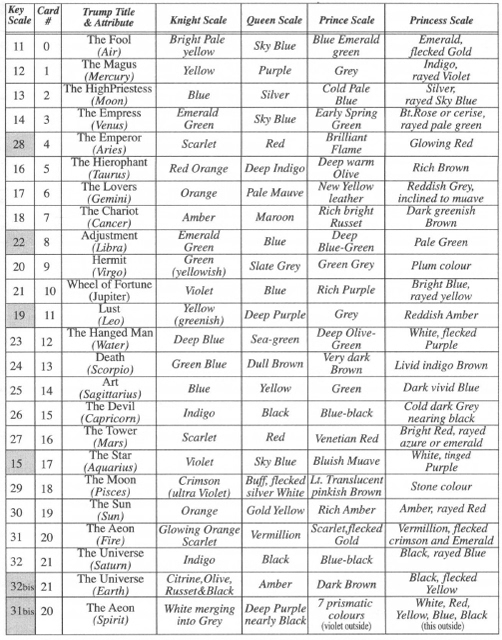
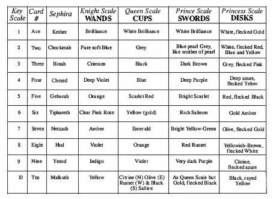

CHAPTER TEN
WORLDS OF COLOR
“…God is light…” (First John: 1:5)
Now that we know a little bit about the Qabalah, the Hermetic Rose Cross, and the Tree of Life, we can discuss one of the most important aspects of the visual magick that is the Thoth Tarot. One of the most striking features of the deck is Lady Harris's curious use of color. Although, in my opinion, all the cards are exotically beautiful, there are a few of them that I have a hard time looking at for any length of time without feeling a bit nauseous. Perhaps this was her intention for cards such as the Seven of Cups (Debauch) or the Nine of Swords (Cruelty), but it is also obvious that her choice of colors was dictated by something other than aesthetics. That something other was the fourfold color scale developed by the adepts of the Golden Dawn.
Imagine, if you will, that the consciousness of the supreme deity is pure light (a venerable universal concept to be sure). Now imagine the divine light passing through a prism and diffusing on the other side into all the colors of the spectrum. This is one way Qabalists (and physicists) visualize the process of creation—pure light (divine consciousness) breaking up and slowing down to become units of energy, mind, and matter.
The magick prism that does all this primal light shattering is none other than

YHVH itself, who, true to its fourfold nature, divides the light into four vibratory frequencies that will eventually manifest as four scales of color. The King scale is the highest, and represents the essence—the invisible foundation of color. With the Queen scale, color actually manifests as the eye beholds it (shades, primary and secondary colors, etc.). The Prince scale combines the colors of the King and Queen scales, and the Princess scale represents the lowest, most mixed and polluted levels of light.Now imagine four Trees of Life, one for each of the four Qabalistic worlds. The light of the King scale filters through and paints the ten sephiroth and twenty-two paths of the Tree of Life representing the highest world, Atziluth. The light of the queen scale filters through and paints the sephiroth and paths of the tree of the next lower world, Briah. The light of the Prince scale filters through and paints the tree of Yetzirah, the next lower world. And finally, the light of the Princess scale filters through and paints the Tree of Life of the lowest world, Assiah.
At the end of the day, we have a total of forty colors representing the aces and small cards and ninety-six colors representing the trumps.90 Appendix B in The Book of Thoth itemizes these colors in four pages of well-organized charts.91 I refer you to my versions, Tables 4 and 5. For the most part, these charts are arranged according to the Sepher Yetzirah's thirty-two paths of wisdom Key scale92
Now that we know that the Thoth Tarot is theoretically splashed with one hundred thirty-six colors, we might well ask where these colors came from. The very specific names for many of them were unromantically lifted directly from the labels of tubes of Winsor and Newton water colors (Designers Gouache series), which were popular with Victorian artists and are still available from W&N todays94. But just who was it who assigned them to their particular Qabalistic pigeonholes? The answer, like most other matters concerning the Thoth Tarot, is complex and open to some speculation.
There is very little debate that the four scales of color issued as part of the Golden Dawn curriculum were ultimately set down by S. L. MacGregor Mathers. It is also clear that he had help from others, including someone who was very knowledgeable in color theory. This was most likely his artist wife, Moina.
The Qabalah, of course, was a major influence in the selection of colors. The mere fact that the degeneration of colors represents a “fall” down the four Trees of Life is proof of that. The King scale appears to be the result of a battle between the red of severity and the white of mercy, as outlined in sections of the Zohar. In other scales, we see the elemental, planetary, and zodiacal colors familiar to us from the Sepher Yetzirah. But Qabalah is not the only tradition Mathers and company drew upon for inspiration. Astrology and alchemy are also rich in color symbolism and traditions that surely influenced many of the color selections. Perhaps most intriguing is the likelihood that some colors were selected as the result of magically induced visions. Skrying in the spirit vision and aura experiments were part and parcel of the Golden Dawn curriculum. The various rays and flecks found in the suit of Disks are especially characteristic of such astral visions.
TABLE 4. COLORS ATTRIBUTED TO THE TRUMPS

TABLE 5. COLORS ATTRIBUTED TO THE SMALL CARDS

Citrine combines blue, red, and yellow with a predominance of yellow; olive, with a predominance of blue; russet, with a predominance of red; and these represent respectively the airy, watery, and fiery sub elements. Black is the earthy part of earth.
I would love to be able to tell you that Lady Harris simply chose the dominant colors for the individual cards directly from the appropriate box in the four scale charts. But, if we spend just a few minutes with the cards and the charts, we see that this is not the case. If we look deeper, however, we discover that Harris does most certainly use the scale charts and with the greatest skill and innovative genius. Let's take the Six of Wands as an example:
If we look to the column representing Wands (Knight scale) in table 5 and refer to the Key scale #6, we find that the color for the Six of Wands should be clear pink rose. There is no (or very little) clear pink rose in the Six of Wands, however. As a matter of fact, the background is violet and purple, and the wands themselves are greenish yellow, outlined with reddish amber. Two of the wands on the card are surmounted by winged solar disks with bright blue feathers and blue uraeus serpents outlined in yellow. Where did these colors come from?
In chapter 14, I will discuss how each of the thirty-six small cards represents one decan (period of ten degrees) of the zodiac.95 Each is also assigned a planet. The Six of Wands represents the planet Jupiter in the second decan of Leo. If we look at Key scale #19 (Leo) on table 4, we find the colors yellow (greenish), deep purple, grey, and reddish amber. If we look at Key scale #21 (Jupiter), we find the colors violet, blue, rich purple, and bright blue rayed with yellow. A perfect match.
Not all the cards are so easily analyzed. Instead of using the colors separately, as she does in the Six of Disks, Harris often blends two or more colors that represent contending or inharmonious astrological or elemental aspects. This is more apparent in the higher-numbered cards, which represent lower sephiroth on the Tree of Life and therefore characterize more imbalanced and polluted forces.
No matter how difficult it may be to work out the method of the color madness of every card in the Thoth Tarot, we can be relatively confident that Lady Harris was not careless or arbitrary in her selections.96 Her painstaking efforts to express in colors the complex and wonderful forces of the universe resulted in the creation of a unique and powerful meditative tool. Each time we work with the cards—each time we lay them out and allow our eyes to drink in their interwoven and interconnected colors—we silently activate those same connective webs of universal influences within ourselves.